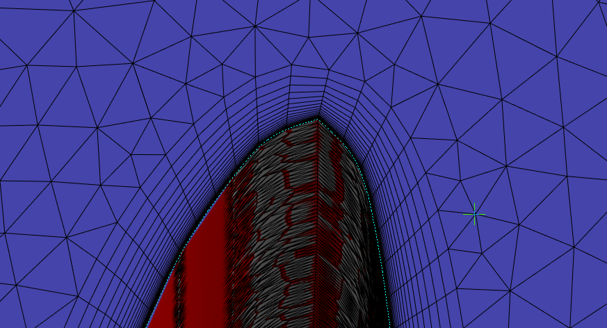
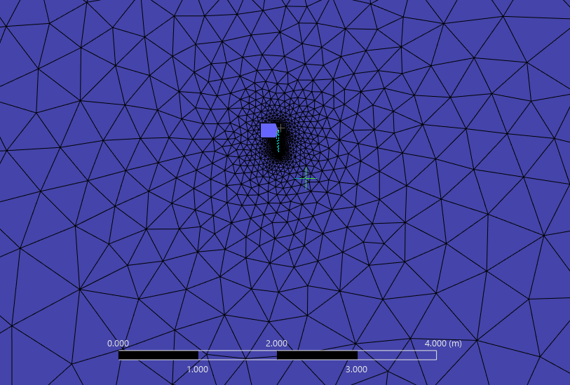
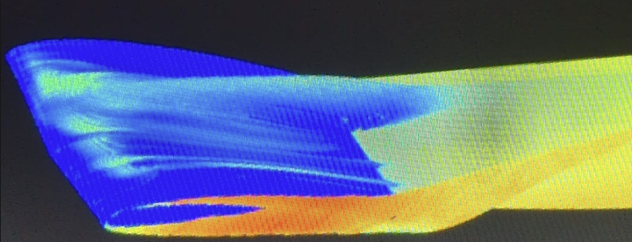

A ~850 g fixed-wing platform built from scratch — airframe, CFD, propulsion, stability, and an ArduPilot-based flight stack with a custom camera gimbal.
| All-up weight | ~816 g (target 800 g) |
| Wingspan | 1 m |
| Airfoil | SD7037, 0.25 m mean chord, tapered planform |
| Spars | 10/8 mm + 4/3mm carbon fibre tube |
| Tail configuration | Conventional |
| Fabrication | PLA / PLA Aero, printed on a Bambu A1 |
| Landing gear | 3D-printed U-shaped PLA skid with Lego wheels |
Design and manufacture of a ~850g fixed-wing UAV designed to carry a payload of a camera stabilised with a PID controlled 2-axis gimbal. The aircraft was designed over the Summer of 2026 with the idea that it could be entirely manufactured from home using the tools I had available, including a 3D printer. As I had never previously flown an RC aircraft before, the aircraft was designed in such a way that allows easy flying for a new user, featuring low aspect ratio wings for delay of stall as well as a pre-built flight computer running ArduPilot to allow for FBW flying. Even with low aspect wings, the wings were designed such as to maximise efficiency.
Initial sizing of the aircraft was based off several factors. The first main factor was for ease of manufacturing, carbon fibre rods that I would likely use as a main wing spar are often sourced in 1m sections, making the wingspan also 1m. The payload, a 2-axis camera gimbal was designed first (mass 88g) so a rough payload fraction of 10% could be used, leading to an initial mass target of 800g.
The basic aircraft configuration was chosen to have a conventional tail arrangement for ease of design. For the payload, a camera mounted to the fuselage was selected, which meant a single prop configuration was not possible. Whilst a single pusher prop was possible, I wanted the aircraft to have redundancy in case of a single motor failure, so a configuration with a propeller mounted on each wing was selected.
To ensure the aircraft was easy to control and land, a moderate stall speed of 7.5m/s was chosen. A wing loading of ~31.4 was chosen to balance stability and handling, obtaining a wing area of 0.5m^2. These chosen parametres then decided the other required parameters of the wing. (density and dynamic viscocity were taken at sea level with values of 1.225kg/m^2 and 0.0000183 Pa s.)
Design input — the lowest speed the aircraft can fly without stalling. Chosen to allow easier landing
W/S = Weight / Wing areaA key sizing parameter linking mass, wing area, and stall speed.
W = m·g
C_L_max = W / (0.5·rho·v_stall^2·S)Weight nromalised by the dynamic pressure at stall speed and wing area — the maximum lift coefficient the wing must be capable of producing.
v_cruise = 1.4 * v_stallSet as a margin of stall speed to ensure the aircaft is not close to stall during cruise.
C_L_cruise = W / (0.5·rho·v_cruise^2·S)Same lift-coefficient relationship as C_L max, evaluated at cruise speed instead of stall speed.
b = S / c_mean
AR = b / c_meanSpan found from wing area over mean chord, then aspect ratio from span over mean chord.
Re = rho * v_stall * c_mean / nuReynolds number at the mean chord, evaluated at stall speed — used to select an appropriate low-Reynolds airfoil.
Re = rho * v_stall * c_mean / nuReynolds number at the mean chord, evaluated at cruise speed — used to select an appropriate low-Reynolds airfoil.
Once basic aerodynamic calculations had been completed, wing development could begin. The foil was selected using XFOIL direct analysis; the wing, tailplane and vertical stabiliser optimised using XFLR5; control surfaces effectiveness was determined using an AVL wrapper for Python.
A number of low-Reynolds airfoils were analysed to determine the most optimal shape for both the main wing and tail sections. Each was analysed at angles of attack varying from -5 to 20° for Reynolds numbers 30,000 to 500,000, with the performance between 120,000 and 180,000 of particular interest.
After analysis, the foil SD7037 exhibited the most optimal behaviour for the main wing. For the tail section, the symmetrical foil NACA0009 was selected. At cruise, SD7037 exhibited the highest lift-to-drag ratio, as well as a stall speed less than 7.5 m/s. NACA0009 exhibited lower drag penalties than the other symmetrical foils tested.
| Foil | C_L max | AoA @ C_L max | V @ C_L max | Glide ratio (stall cond.) | C_L (cruise cond.) | Glide ratio (cruise cond.) |
| AG35 | 1.257 | 9.89° | 6.39 m/s | 57.45 | 0.89 | 54.84 |
| E193 | 1.41 | 8.28° | 6.03 m/s | 66.20 | 1.02 | 44.42 |
| SD7037 ✓ | 1.26 | 9.83° | 6.38 m/s | 63.24 | 0.90 | 60.93 |
| SG6043 | 1.61 | 12.56° | 5.64 m/s | 78.00 | 1.34 | 35.11 |
| NACA4413 | 1.47 | 12.01° | 5.90 m/s | 56.30 | 1.40 | 47.32 |
SD7037 was selected: whilst it doesn't have the single highest C_L max or stall-condition glide ratio, it has the best cruise-condition glide ratio (60.93) of all five candidates, the metric that matters most for cruise efficiency. It does this whilst maintaining a stall efficiency lower than the desired value.
Various wing planforms were tested and compared with a straight wing. Sweep, taper and twist were varied to obtain the most efficient platform. It is important to note when using XFoil direct foil analysis, 3D effects are not accounted for so values of L/D and and C_L_max will be lower once the foil has been applied to a wing.
Once a wing design had been made, it was analysed at both the stall speed of 7.5m/s and a revised cruise speed, based off of the peak of the C_L/C_D polar where the aircraft is most efficient (of the final wing - 10.8m/s).
Adding twist and taper to the wing improve the efficiency of the wing. the addition of sweep to the wing design did not improve the efficiency of the wing, however it did allow the the spar to be placed perpendicular to the centerline at the thickest point allowing the manufacture and structural design to be easier. This amounted to a maximum glide ratio of 15.47, which corresponds to a cruise speed of 10.79m/s. Stall could not be correctly calculated by the solver so stall charactersitcs could not be determined at this stage.
After station for flaps were added, it was found that having a non straight tapered leading edge slightly increased efficiency, this is likely due to the wing becoming slightly more eliptical, therefore efficient. Final wing performance:
As mentioned previously, for more streamlined design and manufacture, a conventional tail configuration was chosen.
l_vt and l_vh, the distance of the vertical and horizontal tail from the main wing trailing edge, were selected as 0.5 so as to not make the tail boom diameter too large. To ensure the tailplane has enough stability authority, a tailplane volume coefficient V_H of 0.5 was selected; similarly for the vertical stabiliser, a V_V value of 0.04 was selected. Aspect ratios for both were selected lower than that of the main wing — 3 and 2 respectively — to maintain control authority after the main wing has stalled, resulting in a horizontal stabiliser span of 0.39 m and a fin height of 0.18 m.
For both sections, the symmetrical foil NACA0009 was selected from a couple other symmetrical foils due to it having less drag than the other foils. Foils were symmetrical so that they can produce equal positive and negative lift in a desired direction when a control surface is deflected.
Aerodynamics retested - new stall speed update
S_tail = V_H * c_bar * S / l_htRearranged from the tail volume coefficient — the tail area needed to give sufficient pitch stability authority.
V_H = (l_ht * S_tail) / (c_bar * S)Design target — a standard non-dimensional sizing parameter for horizontal tail authority, chosen from typical values for this aircraft class.
AR = b^2 / S_tailChosen lower than the main wing's aspect ratio to retain control authority after the main wing has stalled.
b = sqrt(AR * S_tail)Derived from the target aspect ratio and tail area.
c_ht = S_tail / bMean chord of the horizontal stabiliser, from area over span.
Distance from the main wing's trailing edge to the tail — set to avoid an oversized tail boom diameter.
S_vt = V_V * b * S / l_vtRearranged from the vertical volume coefficient — the fin area needed for yaw stability.
V_V = (l_vt * S_vt) / (b * S)Design target for yaw stability authority, analogous to V_H for the horizontal tail.
AR = b_fin^2 / S_vtKept lower than the main wing (and lower than the horizontal stabiliser) for a compact, structurally simple fin.
b_fin = sqrt(AR * S_vt)Derived from the target aspect ratio and fin area.
c_vt = S_vt / b_finMean chord of the vertical fin, from area over height.
| Peak glide ratio | 13.81 |
| C_L at peak | 0.495 |
| Corresponding speed | 10.18 m/s |
| Lift curve slope | 4.16 /rad |
The performance of the whole plane was then analysed in XFLR5. The overall glide ratio was reduced due to the additional drag cause by the tail sections. This decreased the cruise speed slightly from the 10.79m/s of just the wing to 10.2m/s.
Due to the size of the aircraft, a standard system of control surfaces were selected (elevator, rudder, ailerons) as opposed to pure tail control (elevator, rudder). To impove stall characteristics, I additonally wanted to add flaps to the inboard section of the main wing.
Each of the control surfaces were sized as 30% of the chord length, designed with a maximum deflection of 20° each direction. Both the elevator and rudder take up the entire span of the respective wing. Flaps span from 0.063m to 0.313m (0.25m, 1/4 of total span) and ailerons span from 0.313m to 0.475m (0.162m, 16.2% of total span).
To evaluate used AVL wrapper
An aircaft is considered neutrally stable if the central of gravity of the whole aircraft resides at a position called the neutral point, in this position, disturbances cause oscilatory motion in the aircaft. For these oscilations to decay (static stability), a static margin is required (distance the CoG is in front of the neutral point).
Static margin = 11.02% MAC
x_ac = 0.25 * MACStandard quarter-chord assumption for the wing's aerodynamic centre. Point about which the wing's pitching moment is constant with angle of attack.
de_da = 2 * a_w / (pi * AR_wing)How much the tail's effective angle of attack is reduced by the main wing's downwash — needed before the tail's effective lift slope can be found.
a_tail_eff = a_tail * (1 - de_da)The tail's lift-curve slope, reduced to account for the downwash it sits in behind the main wing. Found with XFLR5
x_np = x_ac + (a_tail_eff/a_w) * (S_tail/S_w) * eta_tail * L_tailThe CG position at which the aircraft would have zero static stability.
SM = (x_np - x_cg) / MAC * 100How far ahead the CG sits of the neutral point, as a percentage of mean chord. Measure of pitch stability margin. A positive value means the aircraft is statically stable.
To validate some of the aerodynamic results obtained in XFLR5, CFD (Ansys Fluent) was conducted on the main wing with and without flaps deployed to determine lift, efficiency and stall conditions. CFD would have been conducted on the whole aircraft but was not feasible due to my room becoming too hot during the July UK heatwave.
Stall is caused by the boundary layer of air on the surface of the wing becoming detatched from the surface and the wing losing lift. Boundary layers form very close to the surface (order of 10^-3m), so a fine, structured mesh is required close to the surface to capture this behavior. On the surface of the wing, a structured mesh called an inflation layer, size 0.00001m (y+ = 0.99 - y+<1 for boundary layer), was constructed to correctly capture the local flow effects. (Y+=density * mesh size * friction velocity/ dynamic viscocity)

Away from the wing, a control volume was built, extending 30m infront, above and behind the wing to capture larger behaviors. An unstructured mesh of face sizing size 2mm was built to do this.

To save on computational costs, only a half the wing-span was analysed, values obtained would have to be adjusted accordingly when not using dimensionless numbers. A symmetry wall was then used to prevent flow across the boundary. Inlet and Outlet walls were then defined, for 0° angle of attack, the inlet x-velocity was set to the cruise velocity 10.2m/s, then for other angles, the inlet and freestream walls (top bottom and side of the control volume), were set so that X and Y-velocities were the correct components for that angle. The fluid used inside the boundary was air with density and dynamic viscocity at sea level.
To ensure that the mesh size was not affecting the CFD results, the mesh was refined (face sizing reduced) until the mesh size no longer affected the results. The resultant mesh was fine enough to effect the results, but not fine enough to be computationally expensive.
C_L and C_D both flatten out as the mesh is refined from ~146k to ~307k cells (C_L changes by less than 2% between the two finest meshes, C_D by less than 1%), indicating the results are approaching mesh independence. The ~307k cell mesh was used for the final reported results.
Later when meshing the wing with flaps deployed, a sharp edge at the hinge line caused the solver to crash. This was fixed by adding a fillet to the hinge geometry prior to meshing.
To model stall and drag, a viscous model that models transition must be used, for this task, transition SST was selected (4 equations). This model predicts where the laminar approaching flow transitions to turbulance. It was used as opposed to a fully turbulent model such as k-ω SST as the wing operates at low Reynold's numbers where transition occuring on the wing has effects on separation and drag.
When solving, pressure-velocity coupling was used, with second-order-upwind spacial discretisation parameters. Relaxation controls were initially left on defualt. A solution was demmed converged when all the residuals settled and no longer oscilated. Lift, drag and moment coefficent were monitored for each wing and were compared to XFLR5 results to validate them.
When a solution was struggling to converge, various measures were taken to aid the stability of the solution. Initally I changed the solution controls to underelaxed, forcing the solution to take smaller steps. If this alone did not help, I also changed some of the spatial discretisation schemes to first-order (this increases the error of the results). The final method before altering geometry or remeshing was to change the solution scheme to SIMPLE which is slower bu more stable.
Your content here.
| Quantity | XFLR5 (VLM) | CFD (Fluent) | Difference |
| C_L at cruise AoA (4°) | 0.403 | 0.388 | ~4% |
| C_D at cruise AoA (4°) | 0.0264 | 0.0241 | ~9% |
| C_L at 12° | 0.965 | 0.822 | ~15% |
| C_L at 14° | 1.099 | 0.894 | ~19% |
The two methods agree closely at low-to-moderate angles of attack for C_L (within ~4-9% up to cruise conditions), which is expected since VLM is a potential-flow method and doesn't need viscous effects to be accurate in the linear lift region. The methods diverge more sharply at angles approaching stall (12-14°). Because XFLR5's VLM has no way to model flow separation, so it keeps predicting a linear-ish lift increase, while the viscous CFD model captures the lift curve beginning to flatten as the wing approaches stall. This divergence is expecte and confirms CFD should be trusted for near-stall behaviour.

At high angles of attack (pictured is 12° - blue is near 0 velocity, red ~12m/s), a laminar speration bubble formed on the wings upper surface. Near the leading edge, the near-surface velocity drops to near zero, consistent with recirculating near-stagnent air inside the bubble where the boundary layer has detatched from the surface. In this case, the flow did not reattatch as the AoA was too high. The scalloped shape of the bubble is consistent with laminar separation bubbles, this shows the model selected specifcally to capture low-Re physics was a correct choice.
| Method | e | Basis |
| AVL (vortex lattice) | 0.97 | Inviscid — spanwise loading only |
| CFD (Fluent, viscous) | 0.87 | Viscous — pre-stall points only |
Parabolic drag polar. Plotting C_D against C_L² for low angles of attack gives a linear relationshop whose slope is 1/(π·AR·e). From that slope, e can be solved for directly.
The parabolic drag polar assumption only holds for attached flow. Points at or near C_L_max (where the wing begins to stall and drag rises sharply from separation) were excluded from the regression.
AVL is a vortex-lattice (potential flow) method so it captures only inviscid induced drag from the spanwise lift distribution, with no representation of viscous effects at all. The efficiency is purely span-loading efficiency, and values near 0.95-0.99 are typical for a well-tapered, twisted planform.
In contrast, the drag value obtained in CFD captures flow effects such as boundary layer growth, movement of transition, and the onset of separation, which increase drag with lift faster than the ideal induced-drag-only curve. A CFD-derived e meaningfully below the AVL value is expected.
Electronics were selected so as to minimise weight as well as minimise cost. First thrust then motor requirements were found, before a power system and flight computer were selected.
Propulsion was sized based on the worst-case thrust scenario, which occurs during take-off. Using the lift-to-drag ratio obtained during CFD (13.81) with a penalty (L/D = 10) to account for fuselage drag.
Your content here.
Your content here.
A sharp edge at the flap hinge line was causing Fluent to crash. Fixed by adding a small fillet to the hinge geometry in Onshape before meshing.
Spent a debugging session chasing MPU6050 I2C failures — traced to confusing the WHO_AM_I register value (0x70) with the actual bus address (0x68), on top of clone-chip quirks, SD card init issues, and a blocking pulseIn call. Ended the session with the IMU initialized and angle values printing correctly.
Lost an ESC to a bad solder joint, and separately burned out a motor (black windings, no rotation) on the other side. Root cause: one phase connection used a thin jumper wire while the other two used thicker wire, causing a resistance imbalance across phases. Replacing both ESCs with pre-terminated, no-solder connectors to remove that failure mode.
Brought AUW down from ~828 g to ~816 g via trims to the flap, aileron, and fuselage front sections. The wing sections (outer/middle/inner/tip, ~163 g total) remain the largest untouched mass pool for further optimization.